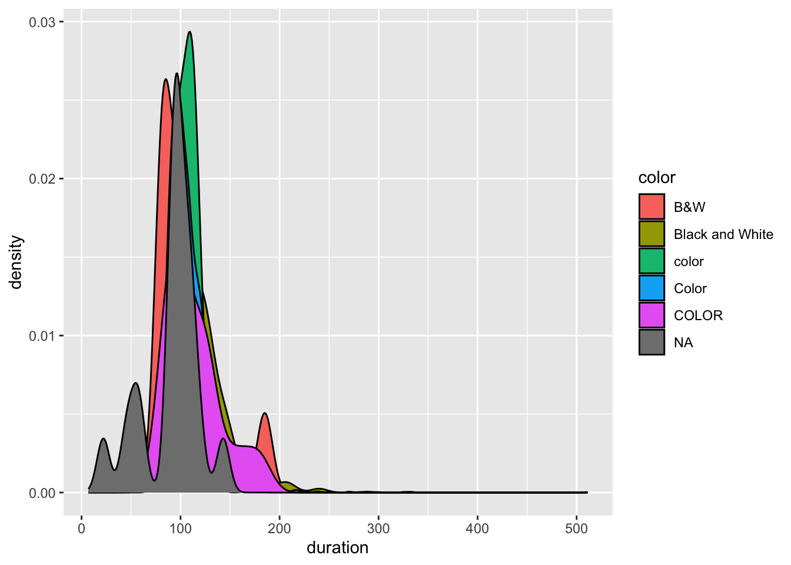

New names:
Rows: 5043 Columns: 29
── Column specification
──────────────────────────────────────────────────────── Delimiter: "," chr
(12): color, director_name, actor_2_name, genres, actor_1_name, movie_ti... dbl
(17): ...1, num_critic_for_reviews, duration, director_facebook_likes, a...
ℹ Use `spec()` to retrieve the full column specification for this data. ℹ
Specify the column types or set `show_col_types = FALSE` to quiet this message.
• `` -> `...1`
22.2 Part B
Code
# This should be the folder where you stored this qmd!getwd()
New names:
Rows: 5043 Columns: 29
── Column specification
──────────────────────────────────────────────────────── Delimiter: "," chr
(12): color, director_name, actor_2_name, genres, actor_1_name, movie_ti... dbl
(17): ...1, num_critic_for_reviews, duration, director_facebook_likes, a...
ℹ Use `spec()` to retrieve the full column specification for this data. ℹ
Specify the column types or set `show_col_types = FALSE` to quiet this message.
• `` -> `...1`
23 Exercise 3: Check Data
Code
imdb_messy |>mutate(across(where(is.character), as.factor)) |># convert characters to factors in order to summarizesummary()
...1 color director_name
Min. : 1 B&W : 10 Steven Spielberg: 26
1st Qu.:1262 Black and White: 199 Woody Allen : 22
Median :2522 color : 30 Clint Eastwood : 20
Mean :2522 Color :4755 Martin Scorsese : 20
3rd Qu.:3782 COLOR : 30 Ridley Scott : 17
Max. :5043 NA's : 19 (Other) :4834
NA's : 104
num_critic_for_reviews duration director_facebook_likes
Min. : 1.0 Min. : 7.0 Min. : 0.0
1st Qu.: 50.0 1st Qu.: 93.0 1st Qu.: 7.0
Median :110.0 Median :103.0 Median : 49.0
Mean :140.2 Mean :107.2 Mean : 686.5
3rd Qu.:195.0 3rd Qu.:118.0 3rd Qu.: 194.5
Max. :813.0 Max. :511.0 Max. :23000.0
NA's :50 NA's :15 NA's :104
actor_3_facebook_likes actor_2_name actor_1_facebook_likes
Min. : 0.0 Morgan Freeman : 20 Min. : 0
1st Qu.: 133.0 Charlize Theron: 15 1st Qu.: 614
Median : 371.5 Brad Pitt : 14 Median : 988
Mean : 645.0 James Franco : 11 Mean : 6560
3rd Qu.: 636.0 Meryl Streep : 11 3rd Qu.: 11000
Max. :23000.0 (Other) :4959 Max. :640000
NA's :23 NA's : 13 NA's :7
gross genres actor_1_name
Min. : 162 Drama : 236 Robert De Niro: 49
1st Qu.: 5340988 Comedy : 209 Johnny Depp : 41
Median : 25517500 Comedy|Drama : 191 Nicolas Cage : 33
Mean : 48468408 Comedy|Drama|Romance: 187 J.K. Simmons : 31
3rd Qu.: 62309438 Comedy|Romance : 158 Bruce Willis : 30
Max. :760505847 Drama|Romance : 152 (Other) :4852
NA's :884 (Other) :3910 NA's : 7
movie_title num_voted_users cast_total_facebook_likes
Ben-Hur : 3 Min. : 5 Min. : 0
Halloween : 3 1st Qu.: 8594 1st Qu.: 1411
Home : 3 Median : 34359 Median : 3090
King Kong : 3 Mean : 83668 Mean : 9699
Pan : 3 3rd Qu.: 96309 3rd Qu.: 13756
The Fast and the Furious : 3 Max. :1689764 Max. :656730
(Other) :5025
actor_3_name facenumber_in_poster
Ben Mendelsohn: 8 Min. : 0.000
John Heard : 8 1st Qu.: 0.000
Steve Coogan : 8 Median : 1.000
Anne Hathaway : 7 Mean : 1.371
Jon Gries : 7 3rd Qu.: 2.000
(Other) :4982 Max. :43.000
NA's : 23 NA's :13
plot_keywords
based on novel : 4
1940s|child hero|fantasy world|orphan|reference to peter pan : 3
alien friendship|alien invasion|australia|flying car|mother daughter relationship: 3
animal name in title|ape abducts a woman|gorilla|island|king kong : 3
assistant|experiment|frankenstein|medical student|scientist : 3
(Other) :4874
NA's : 153
movie_imdb_link
http://www.imdb.com/title/tt0077651/?ref_=fn_tt_tt_1: 3
http://www.imdb.com/title/tt0232500/?ref_=fn_tt_tt_1: 3
http://www.imdb.com/title/tt0360717/?ref_=fn_tt_tt_1: 3
http://www.imdb.com/title/tt1976009/?ref_=fn_tt_tt_1: 3
http://www.imdb.com/title/tt2224026/?ref_=fn_tt_tt_1: 3
http://www.imdb.com/title/tt2638144/?ref_=fn_tt_tt_1: 3
(Other) :5025
num_user_for_reviews language country content_rating
Min. : 1.0 English :4704 USA :3807 R :2118
1st Qu.: 65.0 French : 73 UK : 448 PG-13 :1461
Median : 156.0 Spanish : 40 France : 154 PG : 701
Mean : 272.8 Hindi : 28 Canada : 126 Not Rated: 116
3rd Qu.: 326.0 Mandarin: 26 Germany: 97 G : 112
Max. :5060.0 (Other) : 160 (Other): 406 (Other) : 232
NA's :21 NA's : 12 NA's : 5 NA's : 303
budget title_year actor_2_facebook_likes imdb_score
Min. :2.180e+02 Min. :1916 Min. : 0 Min. :1.600
1st Qu.:6.000e+06 1st Qu.:1999 1st Qu.: 281 1st Qu.:5.800
Median :2.000e+07 Median :2005 Median : 595 Median :6.600
Mean :3.975e+07 Mean :2002 Mean : 1652 Mean :6.442
3rd Qu.:4.500e+07 3rd Qu.:2011 3rd Qu.: 918 3rd Qu.:7.200
Max. :1.222e+10 Max. :2016 Max. :137000 Max. :9.500
NA's :492 NA's :108 NA's :13
aspect_ratio movie_facebook_likes
Min. : 1.18 Min. : 0
1st Qu.: 1.85 1st Qu.: 0
Median : 2.35 Median : 166
Mean : 2.22 Mean : 7526
3rd Qu.: 2.35 3rd Qu.: 3000
Max. :16.00 Max. :349000
NA's :329
there are a lot of NA values that might make summarising functions difficult
there are several different variations of black and white or color factors, when there should only be two
24 Exercise 4: Clean Data: Factor Variables 1
Code
imdb_messy |>distinct(color)
# A tibble: 6 × 1
color
<chr>
1 Color
2 <NA>
3 Black and White
4 COLOR
5 color
6 B&W
There should just be two categories; one for color and one for black and white; instead of a bunch of different variations of each.
The NA values can just be removed from the summary.
Code
imdb_temp <-drop_na(imdb_messy)
This function excluded all of the data points with NA values for any variable from the dataset. This could be a good idea if we are exclusively looking to examine the data through numerical summaries, but a bad idea if we want to look at pretty much any other analysis of the data. Thousands of data points are excluded when this function is used, and as shown earlier, there is significant bias in which films tend to have NA values.
Code
ggplot(imdb_messy, aes(x = duration, fill = color)) +geom_density()
Warning: Removed 15 rows containing non-finite outside the scale range
(`stat_density()`).

Code
imdb_messy |>filter(!is.na(duration)) |>filter(!is.na(color)) |>ggplot(aes(x = duration, fill = color)) +geom_density()
---title: "Data Import"format: html---# Exercise 1: Save Data LocallyData source: https://www.kaggle.com/datasets/tmdb/tmdb-movie-metadataData creator: The Movie Database# Exercise 2: Import Data to RStudio## Part A```{r}library(tidyverse)imdb_messy <-read_csv("~/Documents/GitHub/portfolio-aadachi27/data/imdb_5000_messy.csv")```## Part B```{r}# This should be the folder where you stored this qmd!getwd()```## Part C```{r}imdb_temp <-read_csv("../data/imdb_5000_messy.csv")```# Exercise 3: Check Data```{r}imdb_messy |>mutate(across(where(is.character), as.factor)) |># convert characters to factors in order to summarizesummary()```- there are a lot of NA values that might make summarising functions difficult- there are several different variations of black and white or color factors, when there should only be two# Exercise 4: Clean Data: Factor Variables 1```{r}imdb_messy |>distinct(color)```There should just be two categories; one for color and one for black and white; instead of a bunch of different variations of each.# Exercise 5: Clean Data: Factor Variables 2```{r}imdb_temp <- imdb_messy |>mutate(color =as.character(color)) |>mutate(color =fct_recode(color, "Color"="COLOR","Color"="color","Black_White"="Black and White","Black_White"="B&W"))imdb_temp |>count(color)```# Exercise 6: Clean Data: Missing Data 1```{r}# Count the total number of rows in imdb_messynrow(imdb_messy)# Then count the number of NAs in each columncolSums(is.na(imdb_messy))# Then count the number of NAs in a specific columnimdb_messy |>filter(is.na(actor_1_facebook_likes))```Documentaries tend to have no information on actors for obvious reasons. ```{r}imdb_messy |>filter(is.na(actor_1_facebook_likes))```These are all NA because, as stated above, they are documentaries and therefore don't have lead actors.# Exercise 7: Clean Data: Missing Data 2```{r}imdb_messy |>summarise(avg_duration =mean(duration, na.rm =TRUE))```The NA values can just be removed from the summary.```{r}imdb_temp <-drop_na(imdb_messy)```This function excluded all of the data points with NA values for any variable from the dataset. This could be a good idea if we are exclusively looking to examine the data through numerical summaries, but a bad idea if we want to look at pretty much any other analysis of the data. Thousands of data points are excluded when this function is used, and as shown earlier, there is significant bias in which films tend to have NA values.```{r}ggplot(imdb_messy, aes(x = duration, fill = color)) +geom_density()imdb_messy |>filter(!is.na(duration)) |>filter(!is.na(color)) |>ggplot(aes(x = duration, fill = color)) +geom_density()``````{r}imdb_temp <- imdb_messy |>mutate(actor_1_facebook_likes =replace_na(actor_1_facebook_likes, 0))```